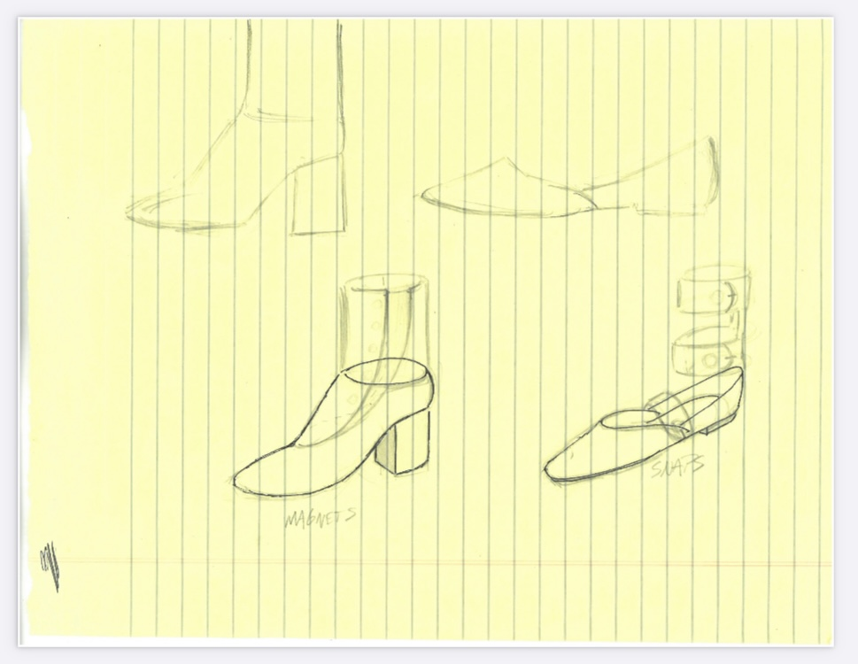
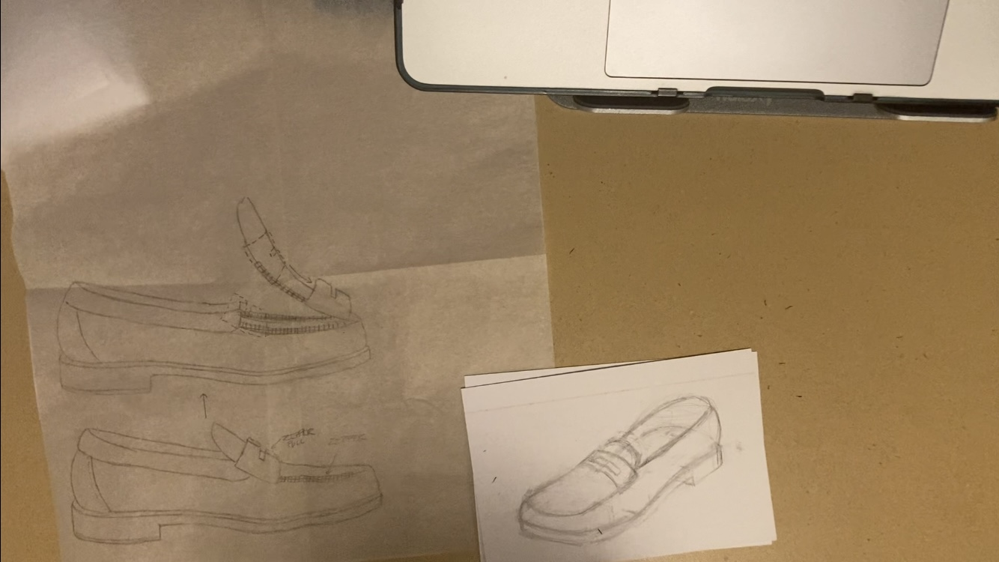

I was originally inspired by the NikeGo Flyeases, a pair of shoes that allowed for the wearer to step directly into the shoes without additional help.
 Above are some initial sketches I made. The top being design concepts for the ballet flats and heeled boots shown on the prototypes page. The lower photo is a concept of how a loafer shoe could hinge open for easier slip on access.